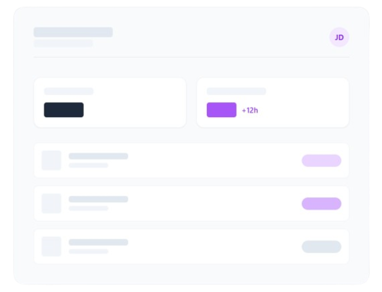

Gestão de horas complementares sem a carga burocrática.
O ASH centraliza, valida e automatiza o fluxo de horas extracurriculares da sua instituição. Automação inteligente para coordenação, praticidade para professores e alunos.

Eficiência Operacional
Três pilares para uma gestão impecável
Desenhamos o ASH para resolver os estrangulamentos reais do dia a dia académico, otimizando o tempo de todos os envolvidos.
Canal Único de Envio
Elimine o envio de certificados por e-mail ou processos físicos. Os alunos submetem tudo num portal centralizado.
Validação Simplificada
Os professores avaliam os documentos submetidos com apenas um clique. Fluxo rápido e auditável.
Geração de Planilhas
A coordenação recebe relatórios formatados automaticamente, prontos para integração com o ERP académico.
Reduza o tempo da coordenação em até 80%
O fecho do semestre não precisa ser caótico. O ASH organiza o fluxo de horas em tempo real, permitindo que a sua equipa se foque na educação.
-
Processamento e auditoria em tempo real
-
Prevenção de fraudes e duplicidade de certificados
-
Dashboards e visibilidade total para o aluno
